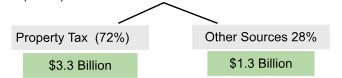
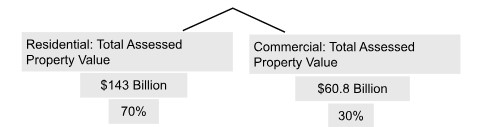
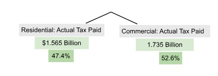
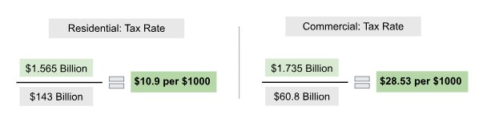

How does the government calculate your tax rate?
Boston City budgeted expenditure
This means that the city of Boston has to generate revenue to fund this expenditure. Historically, majority of funds for the City come through property taxes (~72%) and other sources such as fines, non-property taxes, etc. (~28%)
Next, how does the government decide how much to tax residential and commercial property owners? It first calculates the total assessed property value for each group:
As we can see, residential property owners account for 70% of the city's total assessed property value, while commercial owners account for the remaining 30%. If taxes were based purely on these proportions, each would pay their fair share, i.e., residential property owners would pay 70% of the total taxes, and commercial property owners would pay 30%. However, this is not how it works due to the 175% Rule which allows the commercial property tax rate to be set upto 175% of their fair share, ensuring residents are not overburdened with taxes. Use the interactive graph below to explore how adjusting the 175% rule impacts the overall distribution of the tax burden between these groups.
So, what fraction of the total assessed property value does each group pay?
Explore FY25 Investments
Affordability and Equity
Learn how the City prioritizes providing vital resources to communities.
Climate and Green Spaces
Understand how this year's budget makes the City more resilient to climate change.
Exceptional City Services
Learn how the budget supports the little things that add up.
Public Health and Safety
Explore how this budget ensures Boston is a healthy and safe place to live.
Youth and Families
Learn how the City is making Boston the best place for youth and families.
Explore Revenue
State Aid
Understand trends in State Aid for the City in recent years.
Property Tax
Property taxes continue to make up a large part of the City's revenue.
Local Revenues
Explore how trends in local revenues have change in recent years.
Federal Funds
Learn how Boston is investing our federal stimulus funds in an equitable, effective, and transparent way.